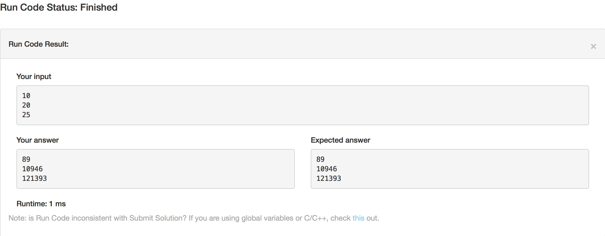
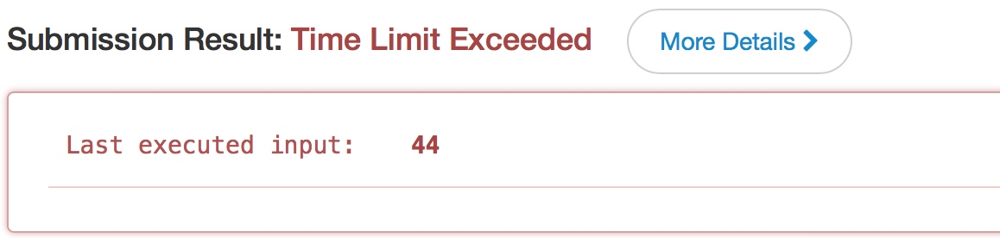
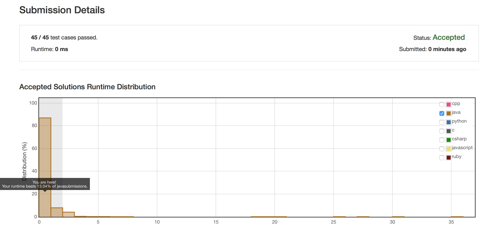

几天前在公司面试的时候，第二轮的面试官问了我几道算法题，第一题是Nil Game，因为之前在Leetcode上刷过这题，也在《编程之美》上看到过几种解法，很轻松就给出了正确答案。第二题问的是爬楼梯问题，即一个N阶的楼梯，每次能走1～2阶，问走到N阶一共多少种走法。之前在Leetcode上也刷过Link，面试的时候临时也想了几种不同的方法去解，回来之后又思考了一番，想出了如下几种解法。
本文目录
递归解法
首先最直观的方法当然是递归求解。因为每次只能走1或2阶，因此，走上第n阶的走法应该等于第n-1阶和n-2阶的和(先走到第n-2阶然后走两阶，或者先走上第n-1阶然后走一阶)。利用 \[\\f(n) = f(n-1) + f(n-2)，f(0) = 1，f(1) = 1\]直接求解。
public class Solution {
public int climbStairs(int n) {
if (n == 0 || n == 1) {
return 1;
}
return climbStairs(n-1) + climbStairs(n-2);
}
}

随便给了几个测试用例，都是通过的，但是递归解法实在是太消耗资源了，因此在提交答案的时候我们会看到...

啊哦，超时了。
我们不可能局限于递归解法，因此如何对这个算法进行优化，成为了现在需要思考的问题。
PS: 如果你在面试中用了这个解法，并且没有提到说要用其他算法进行优化的话...请节哀。
表达式法
高中学二阶数列的时候学过类似的问题，即汉诺塔问题(Link)，当时不会计算机，得到的解法是 \(f(n) = 2＊f(n-1)+1\)，直接求出通项公式，代入求解。
对于爬楼梯算法，我们只需要求解下面这个数列的通项公式:
\[f(n) =\
\begin{cases}
f(n-1)+f(n-2) & n>2 \\\
1 & n=0, 1
\end{cases}
\]
使用数学方法可以解出 \(f(n)\)的通项公式，代入求解即可，时间复杂度为\(O(1)\)，空间复杂度，呃...和其他的相比几乎没有吧。
但是这种方法很不好，因为把计算的过程交给了人来完成。我们使用计算机的一个理由就是为了利用计算机解决计算问题，节约人的时间，如此算法太过于本末倒置。因此我们需要一种算法，既解决了人计算的步骤，也让计算机拥有快速的运行时间复杂度。
动态规划的数组实现
使用数组解法，我们需要创建一个大小为n+1的数组。如果说递归解法是自顶向下的话，数组实现动态规划即是自底向上。在这个算法中，和递归解法类似，只是将f(n)=f(n-1)+f(n-2)换成 result[n] = result[n-1]+result[n-2]即可。
public class Solution {
public int climbStairs(int n) {
int[] result = new int[n];
result[0] = 1;
if( n>= 2) {
result[1] = 2;
}
for(int i = 2; i < n; i++){
result[i] = result[i-1] + result[i-2];
}
return result[n-1];
}
}

采用数组实现的时间复杂度为\(O(n)\)，空间复杂度为\(O(n)\)。
队列实现
注意观察公式 \[f(n)=f(n-1)+f(n-2)\] 当求解到第n项的时候，我们实际上只需要前面两项的值，在计算第n-1项的时候，事实上需要的是第n-1项和第n项，从始至终我们接触到的值都只有三个。
因此，考虑一种队列实现，这个队列共有三个元素，第一个元素我们可以看成是 \(f(n-2)\)，第二个元素看成是\(f(n-1)\)，第三个元素看成是\(f(n)\)。
| 第一项 | 第二项 | 第三项 |
|---|---|---|
| \(f(n-2)\) | \(f(n-1)\) | \(f(n)\) |
在计算到 \(f(n+1)\)时，我们只需要将\(f(n-2)\)出队列，然后将\(f(n+1)\)入队列，此时的队列既变成了 \(f(n-1)\)，\(f(n)\)和\(f(n+1)\)。计算方法和数组实现类似。
| 第一项 | 第二项 | 第三项 |
|---|---|---|
| \(f(n-1)\) | \(f(n)\) | \(f(n+1)\) |
通过队列，我们成功的将空间复杂度降为\(O(1)\)(因为只用了三个元素空间来实现队列)，但是时间复杂度仍旧不变。
当然这种解法也可以通过一个大小为3数组来实现，只是在数组中我们在将第0个元素移除的时候，需要自己实现前移的过程，较为繁琐。
或者我们也可以使用三个变量num1,num2,num3来实现，只是这样一来的话，三个变量需要赋值转换，增加阅读难度。
矩阵算法
构建一个矩阵
\[\begin{align}
\begin{bmatrix}
x_{n} \\
x_{n-1}
\end {bmatrix}
&= \begin{bmatrix}
x_{n-1} + x_{n-2} \\
x_{n-1}
\end{bmatrix}\\
&=\begin{bmatrix}
1 & 1 \\\
1 & 0
\end{bmatrix} *
\begin{bmatrix}
x_{n-1} \\
x_{n-2}
\end{bmatrix}\\
&=\begin{bmatrix}
1 & 1 \\
1 & 0
\end{bmatrix}^{2} *
\begin{bmatrix}
x_{n-2} \\
x_{n-3}
\end{bmatrix}\\
& \dots \\
&=\begin{bmatrix}
1 & 1 \\
1 & 0
\end{bmatrix}^{n-1} *
\begin{bmatrix}
x_{1} \\
x_{0}
\end{bmatrix}\\
&=\begin{bmatrix}
1 & 1 \\
1 & 0
\end{bmatrix}^{n-1} *
\begin{bmatrix}
1 \\
1
\end{bmatrix}\\
\end{align}
\]
在计算 \(x_{n}\)的时候，我们只需要直接计算矩阵\(\begin{bmatrix}1&1\\1&0\end{bmatrix}^{n-1}\)即可。
这样，我们的主要问题就转换成了求矩阵的n次方，时间复杂度降到了\(O(log n)\)
扩展: N阶楼梯，每步可走0～m步，求解算法
从每步1～2级阶梯到1～m级阶梯，需要改变的不仅仅只是步长，还有每步走完之后，对剩余台阶总数的判断。当当总剩余的台阶数n大于步长m的时候，则第一步为1～m的一个数值，循环递归求解可能的走法。如果总剩余台阶数n小于步长m的时候，则步长调整为n，递归求解。
具体代码如下:
public class Solution {
@param n: 总的台阶数
@param m: 每次可以走的最大的阶数
@return: 一共有多少种可能的走法
public int climbStairs(int n, int m) {
int stepsCount = 0;
// 台阶数为0的时候表示已经走完
if (n == 0) {
return 1;
}
// 当总剩余的台阶数n大于步长m的时候，则
// 第一步为 1～m的一个数值，循环递归求解可能的走法
if (n >= m) {
for (int i = 1; i <= m; i++) {
stepsCount += climbStairs(n-i, m);
}
}else {
// 如果总剩余台阶数n小于步长m的时候，则 步长为n，递归求解。
stepsCount += climbStairs(n, n);
}
return stepsCount;
}
}